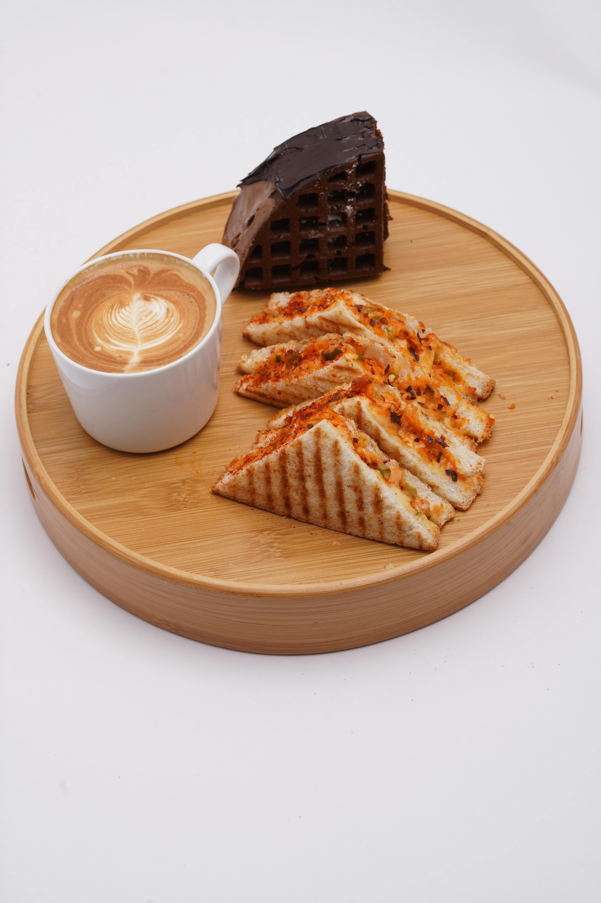

Home
Grilled Hot Turkey Sandwich

Description
Follow this quick and easy recipe for a delicious sandwich.
Ingredients
- 2 green onions, chopped
- 1/4 cup mayo
- 2 tbsp salsa
- 8 slices sourdough bread
- 1/2 lb deli-sliced turkey
- 4 slices pepperjack cheese
- 4 tbsp butter
Steps
- Mix together green onions, mayo, and salsa in a small bowl until well combined.
- Spread sauce over each bread slice. Layer turkey and pepperjack cheese on 4 bread slices. Top with remaining bread slices to make 4 sandwiches.
- Melt 2 tbsp butter in a large skillet over medium heat. Fry both sides of sandwiches in hot butter until bottoms are lightly toasted.